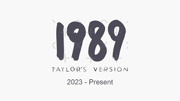

|  |
Taylor Alison Swift is an American singer-songwriter. Known for her autobiographical songwriting and artistic reinventions, Swift is an influential figure in popular culture andTaylor Alison Swift is an American singer-songwriter. Known for her autobiographical songwriting and artistic reinventions, Swift is an influential figure in popular culture and the subject of widespread public interest.Taylor Alison Swift is an American singer-songwriter. Known for her autobiographical songwriting and artistic reinventions, Swift is an influential figure in popular culture and the subject of widespread public interest.Taylor Alison Swift is an American singer-songwriter. Known for her autobiographical songwriting and artistic reinventions, Swift is an influential figure in popular culture and the subject of widespread public interest.Taylor Alison Swift is an American singer-songwriter. Known for her autobiographical songwriting and artistic reinventions, Swift is an influential figure in popular culture and the subject of widespread public interest.